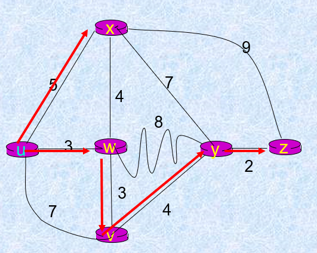

计算机网络笔记（五）- 网络层-控制平面
计算机网络-传输层-控制平面知识点
两种方式：
- 每个路由器独立运行路由算法
- 逻辑集中控制（SDN）
路由选择算法
与主机直接相连的路由器称为默认路由器，主机向默认路由器发送/接收分组。
选路目的：决定从源路由器到目的路由器的“好的路径”（例如费用最小的路径）。
选路算法分类：
- 全局的：
- 所有路由器具有完全的拓补、链路费用信息
- “链路状态”（Link State, LS）算法
- 分散的：
- 一开始，路由器仅有与其直接相连链路的费用信息
- 在迭代过程中与邻居交换信息
- “距离矢量”（Distance Vector, DV）算法
- 静态的：
- 路由随时间缓慢变化
- 手动配置
- 动态的：
- 路由更快地变化，周期更新，适应链路费用和网络拓补结构变化
链路状态算法
链路状态算法使用Dijkstra算法
- 所有节点知道网络拓补、链路费用
- 经链路状态广播完成
- 所有节点具有相同的信息
- 从一个节点（源）到所有其他节点计算最低费用路径
- 给出这些节点的转发表
- 迭代：k次迭代后，得知到k个目的地的最低费用路径
- 概念：
- c(x,y)：从节点到的链路费用。如果不是邻居，为。
- D(v)：从源到目的地路径费用的当前值。
- p(v)：从源到v的路径上，节点v的前任节点
- N’：已知在最小费用路径中节点的集合
- 算法：
1 | 初始化: |
举例：

| Step | N’ | D(v), p(v) | D(w), p(w) | D(x), p(x) | D(y), p(y) | D(z), p(z) |
|---|---|---|---|---|---|---|
| 0 | u | 7,u | 3,u | 5,u | ∞ | ∞ |
| 1 | uw | 6,w | 5,u | 11,w | ∞ | |
| 2 | uwx | 6,w | 11,w | 14,x | ||
| 3 | uwxv | 10,v | 14,x | |||
| 4 | uwxvy | 12,y | ||||
| 5 | uxwvyz |
u的最终转发表：
| 目的 | 链路 |
|---|---|
| v | (u,w) |
| x | (u,x) |
| y | (u,w) |
| w | (u,w) |
| z | (u,w) |
链路状态广播过程：
- 发现邻居并测量链路成本（时延）
- 测量与邻居相连的链路状态
- 封装链路状态包
- 广播链路状态信息
性能分析
- 算法复杂度：个节点时间复杂度。
- 可能产生震荡：路由随着链路成本的变化来回切换，造成路由不稳定。
距离矢量算法
距离矢量算法使用Bellman-Ford方程（动态规划）。
定义 表示从 到 最低费用路径的费用，则必有 。
是从 到 最小费用的估计。节点 维护距离矢量（Distance Vector, DV）: 。
基本思想：
- 每个节点周期性地发送它自己的距离矢量DV给邻居
- 当节点收到来自新邻居的DV估计，使用BF方程更新其自己的DV
- 在规模较小、正常的条件下， 收敛在
每次迭代可能由以下原因引起：
- 本地链路费用改变
- 邻居更新报文
无穷计算问题
路由选择可能遇到选择环路：为到达，通过路由，又通过路由。在转发表发生改变之前，分组将在两个节点之间不断反复。
在DV中坏消息传播的很慢，在稳定之前可能需要反复迭代。
毒性逆转
如果通过路由选择到达，则将告诉，它到达的距离为无穷大。涉及到三个或更多节点的环路，毒性逆转不能解决无穷计算问题。
LS与DV算法比较
- 报文复杂性：
- LS：对个节点，条链路，发送个报文
- DV：仅在邻居之间变换
- 收敛速度：
- LS：算法要求报文
- 可能具有震荡
- DV：收敛时间变化
- 可能有选路环路
- 计数到无穷问题
- LS：算法要求报文
- 健壮性：
- LS：
- 节点可能通告不正确的链路费用
- 每个节点仅计算它自己的表
- DS：
- DV节点通告不正确的路径费用
- 每个节点表能由其他人使用
- LS：
控制平面
自治系统（Autonomous System, AS）
出于管理和扩展的目的，因特网可以被分割为不同的自治系统。同一AS内的路由器运行相同的路由协议。不同AS内的路由器可以运行不同的选路协议。
网关路由器
位于AS的边缘，通过链路连接其他AS的网关路由器。互通的AS之间运行相同的自治系统间的选路协议。
选路协议
- Intel采用层次路由
- 用于自治系统内部的路由协议称为内部网关协议，简称IGP（Interior Gateway Protocal）。
- 路由信息协议RIP: Routing Information Protocol（DV）
- 开放最短路径优先OSPF：Open Shortest Path First（LS）
- 中间系统到中间系统：Intermediate System to Intermediate（LS） System
- 用于自治系统接口上的路由协议称为外部网关协议，简称EGP（Exterior Gateway Protocol）
- 边界网关协议（BGP-4）
RIP（选路信息协议）
RIP是内部网关协议中最先广泛使用的协议。它是一种基于距离向量（DV算法）的路由选择协议。距离度量：跳的数量（最大15跳）。跳：从源路由器到目的子网的最短路径所经过子网的数量。
特点：
- 仅和相邻路由器交换路由选择信息：目的子网，下一台路由器，跳数，例子：
| 目标子网 | 下一路由器 | 跳数 |
|---|---|---|
| w | A | 2 |
| y | B | 2 |
| z | B | 7 |
| x | – | 1 |
- 按固定的时间间隔交换路由信息（RIP响应报文/RIP通告），例如每隔30秒
- 每次通告最多25个目的子网（IP地址形式）
- 如果一段时间（例如180秒）没有收到通告→邻居/链路失效
RIP中的路由向量算法
收到一个来自x的RIP报文后：
- 首先修改该报文中的所有项目：将“下一跳”字段的地址修改为x，并把距离加1
- 对修改后报文中的每个项目：
- 如果项目中的目的网络不在路由表中，则添加该项目到路由表
- 否则，若“下一跳”字段的地址相同，将收到的项目替换原表中的项目
- 否则，若收到项目的距离小于路由器表中的距离，则更新
- 若一段时间（例如3分钟）后，还没有收到相邻路由表的更新路由表，则将此路由器标记为不可到达的路由器（设置距离为16）。新的通告发送给邻居。使用毒性逆转防止回路。
举例：
假设路由器D具有路由表
| 目的子网 | 下一跳路由器 | 距离 |
|---|---|---|
| w | A | 2 |
| y | B | 7 |
| x | F | 8 |
| h | E | 5 |
收到来自B的RIP报文：
| 目的子网 | 距离 |
|---|---|
| z | 3 |
| y | 7 |
| x | 4 |
| h | 7 |
首先对于每个项目，其距离都需要加一，对于每个报文：
- 没有目的子网z，直接加到路由表中
- 下一跳路由器相同，直接替换
- 到x的距离为5，小于原本的8，直接替换
- 到h的距离为8，大于原本的5，不操作
更新路由表如下：
| 目的子网 | 下一跳路由器 | 距离 |
|---|---|---|
| w | A | 2 |
| y | B | 8 |
| z | B | 4 |
| x | F | 5 |
| h | E | 5 |
RIP表处理
- RIP选路表由称为"routed-d"（守护进程）的应用级进程管理。
- 通告在UDP分组中
RIP协议的优缺点
- 实现简单，开销较小
- 限制了网络的规模，最大距离为15
- 随着规模增加，开销增加
- 因为交换的信息是完整的路由表
- 无穷计算问题：当网络出现故障时，要经过比较长的时间才能将此信息传送到所有路由器
OSPF协议
开放最短路径优先(OSPF) 协议是目前IGP中应用最广，性能最好的协议
- 使用链路状态算法
- LS分组扩散通告（泛洪）
- 每个路由器构造完整的网络（AS）拓补图
- 利用Diskjtra算法构造路由
- 可适应大规模网络-层次OSPF
- 路由变化收敛速度快
工作方式
- 每个路由器通过HELLO与邻居节点形成和维持邻居关系
- 路由器节点在与邻居的交互中掌握本区域网络互补，使用Dijkstra算法完成本节点路由计算
- 邻居或链路状态发生变化时，将信息通过洪泛算法散布到整个区域
- OSPF报文直接封装在IP中
层次OSPF
- AS由多个区域组成，每个区域运行自己的OSPF路由选择算法
- 一个区域内，区域边界路由器为流向区域外的分组提供路由选择
- 一个AS有一个主干区域，包含了区域边界路由器，为AS内其他区域之间提供路由
BGP协议
边界网关协议BGP是AS间路由协议，因特网“粘合剂”
BGP为每个AS提供了一种手段
- 从相邻AS获得子网可达性信息
- 向AS内部的所有路由器传播可达性信息
- 基于可达性信息和策略，决定到子网的“好”路由
BGP基础
BGP通过TCP连接BGP会话（iBGP、eBGP） 来分发路由信息。对每条连接，位于该连接端点的两台路由器称为BGP对等方。
BGP会话不对应物理网络。

分发可达性信息
- AS之间：在子网之前存在eBGP会话，一个AS向另一个AS发送前缀可达性信息（前缀表示一个子网/子网集合）。
- AS内：边缘路由器使用iBGP向AS内的所有路由器分发新的可达性信息。
- 消息传播：当连接另一个子网的边缘路由器收到这个可达性信息时，会继续通告。当路由器知道了一个新前缀，会在转发表中为该前缀创建表项。
路径属性 & BGP路径
- 当通告一个前缀（可达子网）时，通告中包括了BGP属性：前缀+属性=路由
- 两个重要的属性：
- AS-PATH：包含了传递前缀的通告所经过的AS
- AS2向AS1通告到前缀x的AS-PATH：AS2
- AS1向AS3通告到前缀x的AS-PATH：AS2 AS1
- 下一跳：下一跳路由器的IP地址
- AS-PATH：包含了传递前缀的通告所经过的AS
基于策略通告信息
例如，一个ISP可以只承载其客户的流量，不承载其他ISP的流量。
BGP路径选择
选择路由由策略决定
- 最短AS-PATH
- “热土豆”路由：选择具有最低费用的网关
- 各种过滤
AS间策略比性能更重要
软件定义网络（SDN）
逻辑集中式控制器（远程控制器，RC）与本地控制代理（CAs）交互，从而计算并分发转发表。
优点：
- 更方便网络管理
- 集中式统一管理，避免路由器配置错误
- 动态流量监管，灵活处理流量
- 基于流表转发，编程路由器
- 集中式编程，更容易：集中计算流表，再分发
- 控制平面的开放实现
- 可编程按需定制
SDN组成：
- 网络控制应用
- 控制平面：SDN控制器
- 维护网络状态信息
- 与网络控制应用程序通过API交互
- 与网络交换机通过API交互
- 分布式系统
- 数据平面：交换机
- 快速、简单、交换机硬件实现通用转发
- 交换机的流表由远程控制器计算和配置
- 通过API配置交换机流表
- 遵循协议和远程控制器通信
OpenFlow协议
- 运行在SDN控制器、SDN交换的控制机
- 利用TCP交换消息（6653）